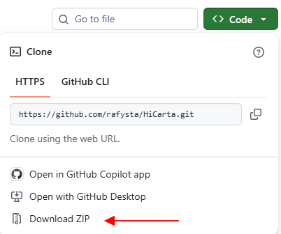

Setup details & troubleshooting¶
This page collects the extra details and troubleshooting for when the 3 steps in Installation weren't enough. If it already starts fine, you don't need to read this.
Get it with Git (instead of the ZIP)¶
Instead of downloading the ZIP, if you have Git installed you can also get it with the following command. This makes it easier to pull in updates.
git clone https://github.com/rafysta/HiCarta.git
Start it on a Mac¶
It works on a Mac too.
- Install R (4.1 or later) from https://cran.r-project.org (the CRAN
.pkg, orbrew install --cask r). -
Download and unzip HiCarta.

-
Double-click
run_mac.commandin the folder.
If it won't open and shows "cannot be opened because the developer cannot be verified", right-click run_mac.command → "Open" to start it. Or run the following once in the terminal:
chmod +x run_mac.command
To stop the app, press Ctrl+C in the terminal window or close the window.
Required R packages¶
On first launch, the launcher checks for missing packages and, if needed, runs R/install_libraries.R to install them automatically. The breakdown is:
| Package | Source | Purpose |
|---|---|---|
| shiny, leaflet, htmlwidgets, base64enc | CRAN | The app + tile map |
| data.table | CRAN | Fast text reading |
| RColorBrewer | CRAN | Color palettes |
| jsonlite | CRAN | Saving/restoring sessions |
| shinyFiles | CRAN | The "Browse…" dialog for local files |
| strawr | CRAN | Random access to .hic |
| rtracklayer | Bioconductor | bigWig / BED tracks |
rtracklayer takes time
rtracklayer comes from Bioconductor, so the first install can take a few minutes. This is normal.
Only if you want to install the packages manually all at once, start R and run:
source("R/install_libraries.R")
How starting and stopping works¶
The app opens a browser tab at http://127.0.0.1:7788. To stop it, on Windows close the launcher window (Command Prompt), and on macOS press Ctrl+C in the terminal or close the window. If port 7788 is already in use, the launcher automatically terminates the previous instance before starting.
Troubleshooting¶
"Could not find Rscript" appears¶
R is not installed, or it is not on your PATH. Install R and start again. On Windows the launcher also searches C:\Program Files\R\.
rtracklayer fails to install¶
Make sure you're connected to the internet on first launch. If it still doesn't work, start R and install it directly:
if (!requireNamespace("BiocManager", quietly = TRUE)) install.packages("BiocManager")
BiocManager::install("rtracklayer")
Nothing shows / the map is blank¶
Check that a dataset is loaded in Data, that a region is set in Navigate, then click Open map.
The first open of a remote .hic is slow¶
A remote file is downloaded to _hic_cache/ only on the first open; later it is read from that cache, which is fast. If you want to free up disk space, you can delete the _hic_cache/ folder (it will be re-downloaded when needed).
Change the startup defaults (config.txt)¶
Defaults such as the menu URL, track list and interface language are saved in config.txt in the same folder as the app. You can edit them from Setting → Edit config file… inside the app (see Screens & controls for details). To edit it manually, copy config.example.txt to config.txt and edit it.